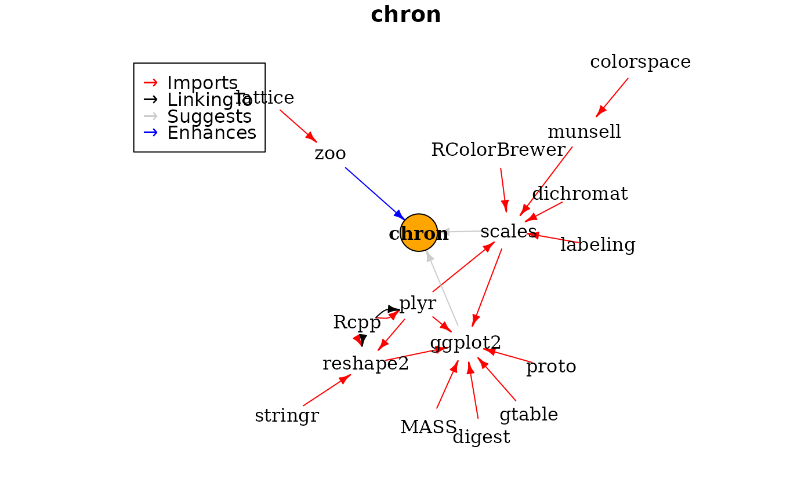
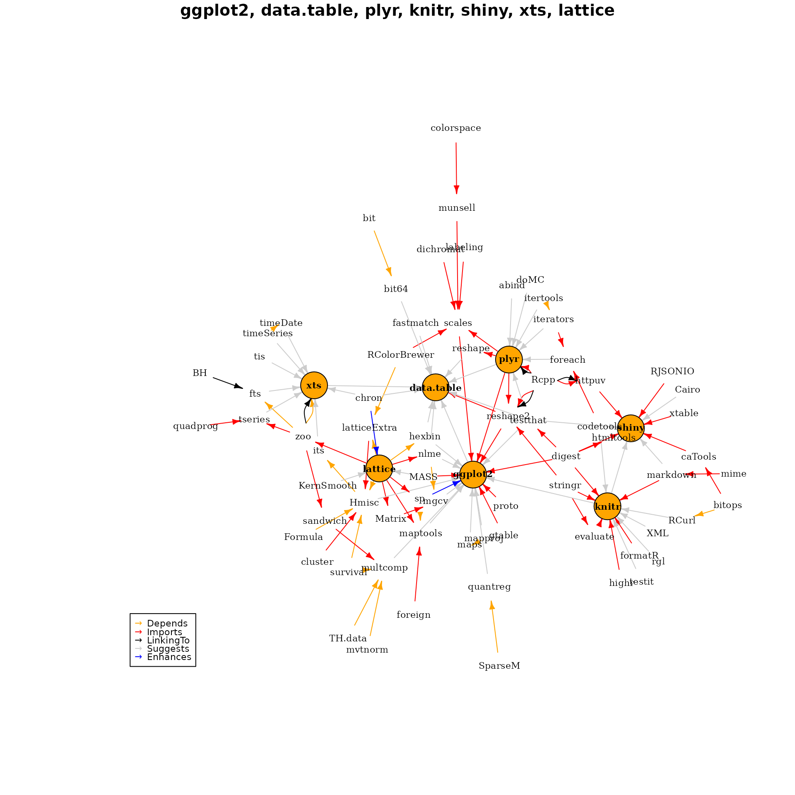

Using miniCRAN to identify package dependencies
Andrie de Vries
February 12, 2022
Source:vignettes/miniCRAN-dependency-graph.rmd
miniCRAN-dependency-graph.rmdThe miniCRAN package exposes two functions that provide information about dependencies:
The function
pkgDep()returns a character vector with the names of dependencies. Internally,pkgDep()is a wrapper aroundtools::package_dependencies(), a base R function that, well, tells you about package dependencies. MypkgDep()function is in one way a convenience, but more importantly it sets different defaults (more about this later).The function
makeDepGraph()creates a graph representation of the dependencies.
The package chron neatly illustrates the different roles of Imports, Suggests and Enhances:
chronImports the base packages graphics and stats. This means thatchroninternally makes use of graphics and stats and will always load these packages.chronSuggests the packages scales and ggplot2. This means thatchronuses some functions from these packages in examples or in its vignettes. However, these functions are not necessary to usechronchronEnhances the packagezoo, meaning that it adds something tozoopackages. These enhancements are made available to you if you havezooinstalled.
A worked example using the package chron
The function pkgDep() exposes not only these dependencies, but also all recursive dependencies. In other words, it answers the question which packages need to be installed to satisfy all dependencies of dependencies.
This means that the algorithm is as follows:
- First retrieve a list of
SuggestsandEnhances, using a non-recursive dependency search - Next, perform a recursive search for all
Imports,DependsandLinkingTo
The resulting list of packages should then contain the complete list necessary to satisfy all dependencies. In code:
tags <- "chron"
pkgDep(tags, availPkgs = cranJuly2014)## [1] "chron" "RColorBrewer" "dichromat" "munsell" "plyr"
## [6] "labeling" "colorspace" "Rcpp" "digest" "gtable"
## [11] "reshape2" "scales" "proto" "MASS" "stringr"
## [16] "ggplot2"To create an igraph plot of the dependencies, use the function makeDepGraph() and plot the results:
dg <- makeDepGraph(tags, enhances = TRUE, availPkgs = cranJuly2014)
set.seed(1)
plot(dg, legendPosition = c(-1, 1), vertex.size = 20)
Note how the dependencies expand to zoo (enhanced), scales and ggplot (suggested) and then recursively from there to get all the Imports and LinkingTo dependencies.
An example with multiple input packages
As a final example, create a dependency graph of seven very popular R packages:
tags <- c("ggplot2", "data.table", "plyr", "knitr", "shiny", "xts", "lattice")
pkgDep(tags, suggests = TRUE, enhances = FALSE, availPkgs = cranJuly2014)## [1] "ggplot2" "data.table" "plyr" "knitr" "shiny"
## [6] "xts" "lattice" "digest" "gtable" "reshape2"
## [11] "scales" "proto" "MASS" "Rcpp" "stringr"
## [16] "RColorBrewer" "dichromat" "munsell" "labeling" "colorspace"
## [21] "evaluate" "formatR" "highr" "markdown" "mime"
## [26] "httpuv" "caTools" "RJSONIO" "xtable" "htmltools"
## [31] "bitops" "zoo" "SparseM" "survival" "Formula"
## [36] "latticeExtra" "cluster" "maps" "sp" "foreign"
## [41] "mvtnorm" "TH.data" "sandwich" "nlme" "Matrix"
## [46] "bit" "codetools" "iterators" "timeDate" "quadprog"
## [51] "Hmisc" "BH" "quantreg" "mapproj" "hexbin"
## [56] "maptools" "multcomp" "testthat" "mgcv" "chron"
## [61] "reshape" "fastmatch" "bit64" "abind" "foreach"
## [66] "doMC" "itertools" "testit" "rgl" "XML"
## [71] "RCurl" "Cairo" "timeSeries" "tseries" "its"
## [76] "fts" "tis" "KernSmooth"
dg <- makeDepGraph(tags, enhances = TRUE, availPkgs = cranJuly2014)
set.seed(1)
plot(dg, legendPosition = c(-1, -1), vertex.size = 10, cex = 0.7)